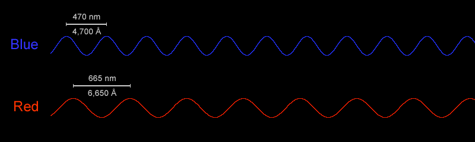
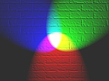

Click here to go back to the main page.
To understand how colour works, we first have to understand a bit about light. After all, colours are just different kinds of light!
Light is all around us pretty much all of the time. Without it, we wouldn't be able to see anything. In order for us to see objects, a certain amount of light will bounce off the object and the rods in our eyes will process it and send the information to our brain to figure it out. Colour is made from variations of a wavelength, the shorter or longer the wavelength is, the more different the colour will end up being.
For example, the wavelength for the colour blue is between 450 and 495 nanometers wheras the wavelength for the colour red is between 620 to 750 nanometers. The wavelength for blue is a lot shorter than the one for red meaning it can carry more energy.
White light is made up from different wavelengths and when it hits an object, light made from a specific wavelength might bouce off the object instead of being absorbed and the cones in our eyes will detect the wavelength. We have three types of cones in our eyes that make it so we can percieve color. Red cones, green cones and blue cones. There has been a few studies that show that some people can have four cones but there is not that much information about that and the majority pf people have only three so I will be referring to that as our default. Our eyes can only really see red, green and blue because of this but it still takes in the information and the brain just kind of guesses what it should look like based on the informarion it's given.
